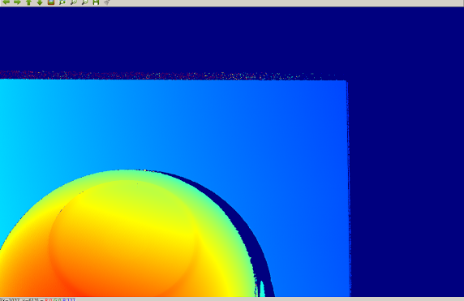
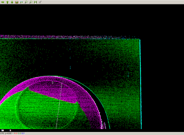
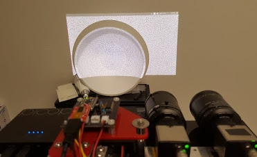
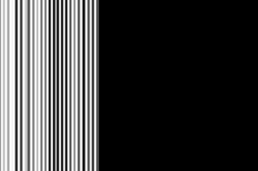
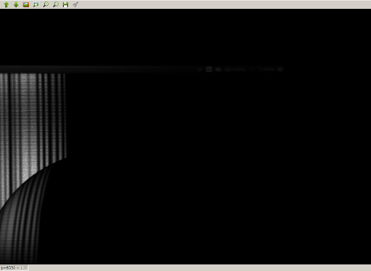
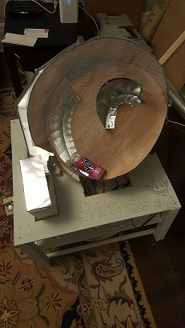
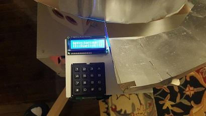
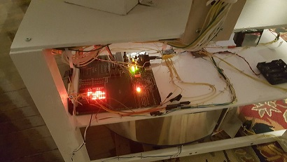
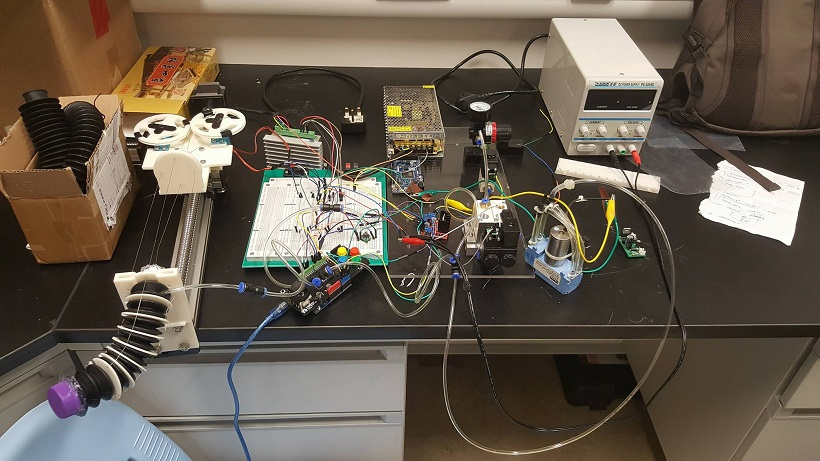
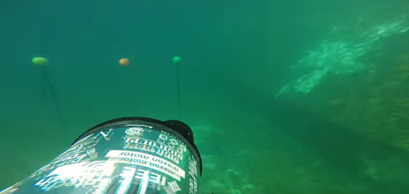

Welcome to my online portfolio!
My name is Gary and I am a third year Engineering Science Robotics student at the University of Toronto. I'm an avid programmer, and I often participate in many hackathons or further my personal projects. In addition, I spend a lot of time involved
with school design teams such as University of Toronto Project Holodeck, and Mechatronic Design Assosciation. My fields of interest mainly includes
computer vision, robotics, and machine learning
and I hope to pursue these in graduate level studies.
In my free time I enjoy learning new languages, playing the piano, gaming with friends, and reading.
I'm always looking for new opportunities. Be sure to check out my resume!
Some cool pictures of experiences/projects I did:
My summer coding at Dynamics Graphics Project:
    
More of my work in the form of a daily work update journal can be seen here.
Our autonomous bottle sorting robot (which won 4th out of 68!):
  
Our 165 page project proposal and outline for our robot here. (all the software parts are me)
My time at the Chinese University of Hong Kong building/coding a mechatronic arm:

Developing computer vision for an autonomous submarine!

This picture and the video aren't our autonomous submarine (couldn't find pictures), but it does showcase the buoy task I was doing computer vision for. Here.